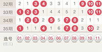
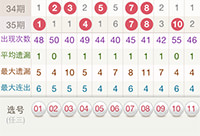
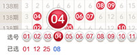

- 1. 走势图
- 走势图是将最近每期的开奖号码用图表的形式直观地呈现出来，便于分析。
- 如图，在第35期中，号码01在当前开出；而号码06未开出，并且已经有6期未开出了。
- 
- 您可以按需要选择显示最近30期、50期或100期的走势图进行分析。
- 2. 统计
- 在走势图底部，默认显示每个号码的统计数据供您参考，包括 出现次数、平均遗漏、最大遗漏、最大连出 4项数据，如图：
- 
- 出现次数：统计期数内累计出现的次数
平均遗漏：统计期数内遗漏的平均值。计算公式：平均遗漏=每次遗漏期数之和/出现次数。
最大遗漏：统计期数内遗漏的最大值
最大连出：统计期数内连续开出的最大值 - 如当前显示的是100期的走势，则统计期数就是100。如您不需要参考这些数据，可以选择隐藏统计。
- 3. 选号
- 页面底部设有预选行，方便您边看走势边选号，选好之后点击“完成”按钮即可，号码会自动带回投注页面。
- 